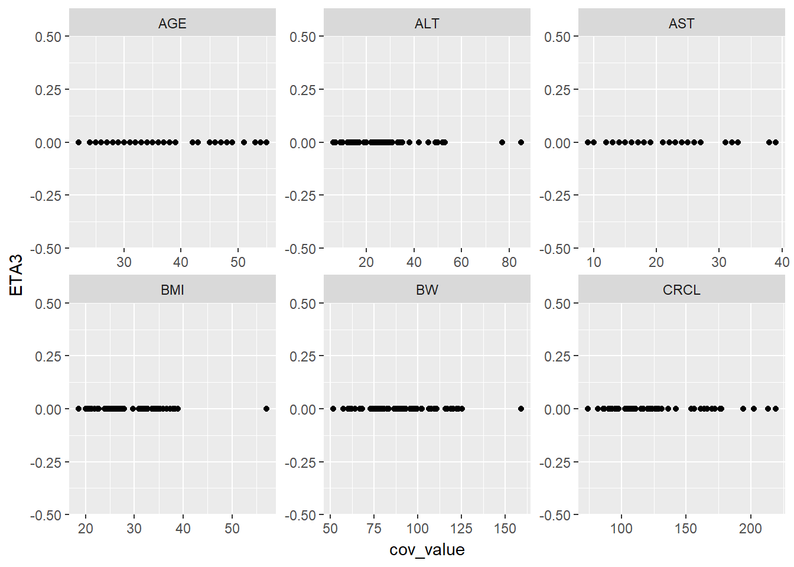
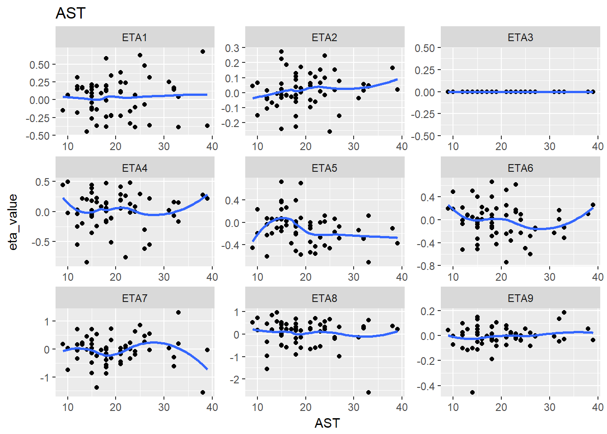
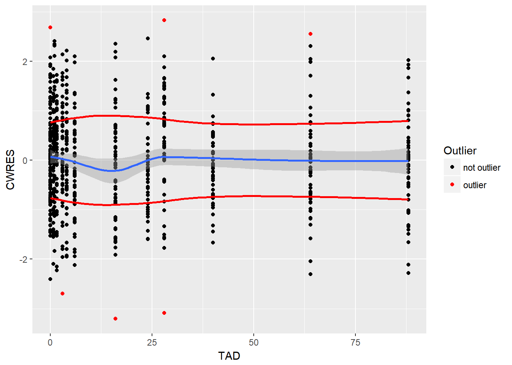
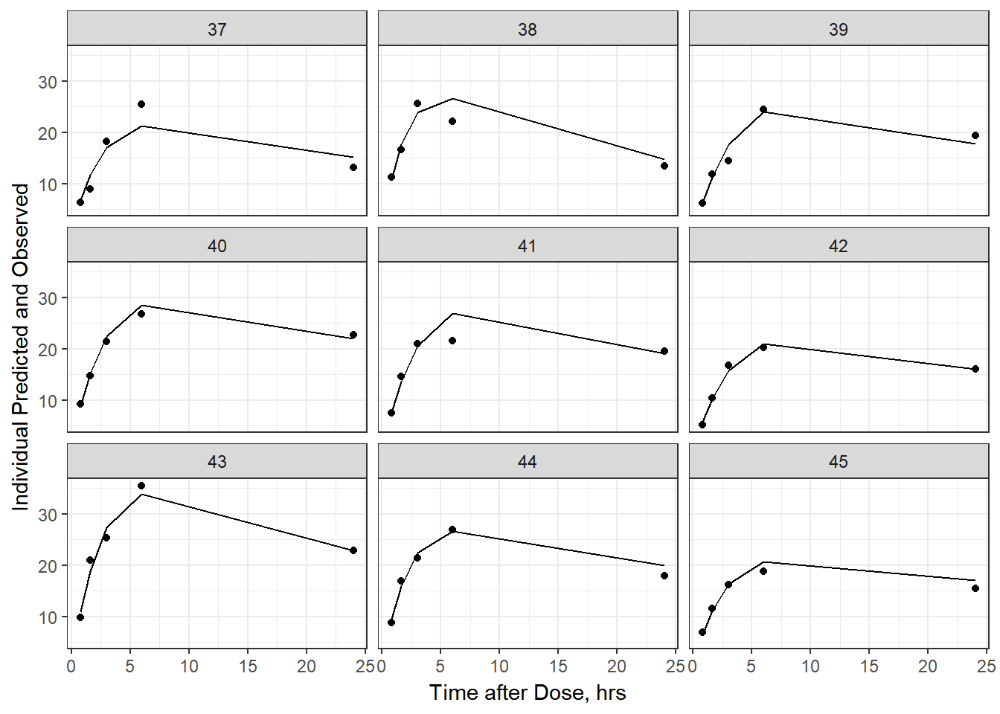
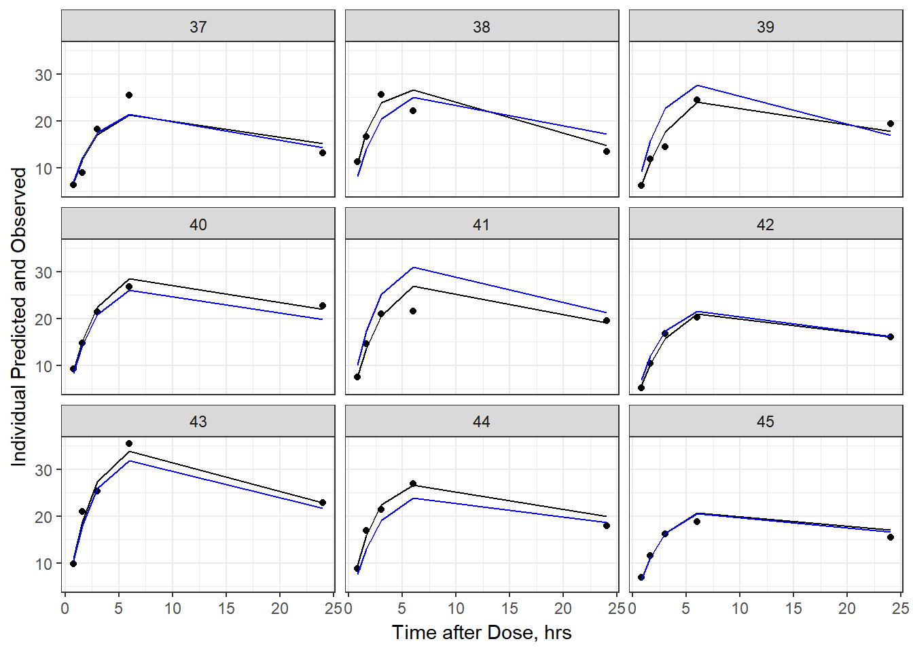
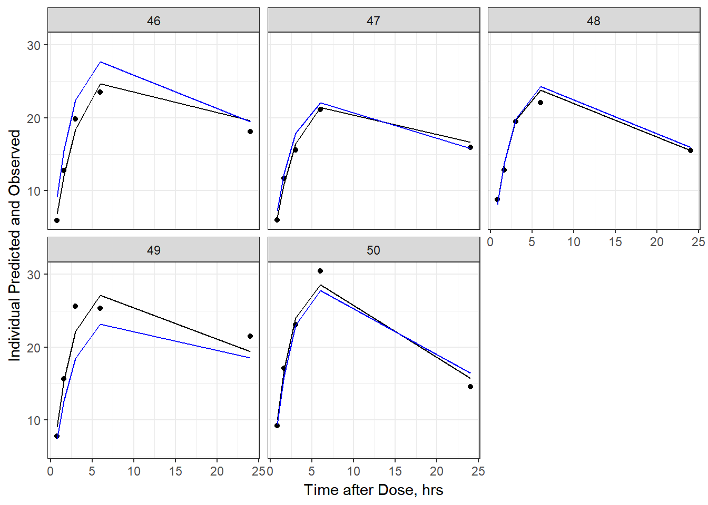
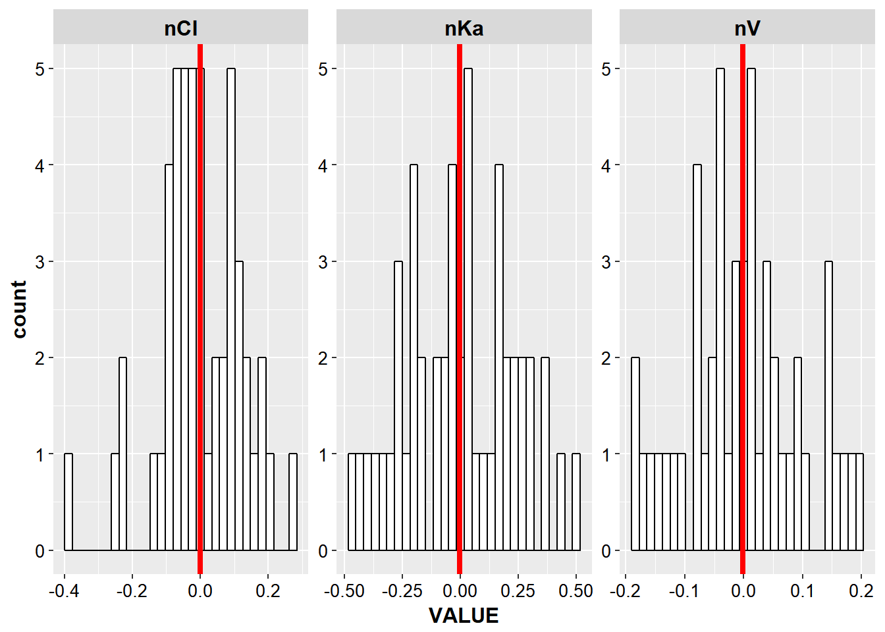

6 Legacy
Solutions from previous workshops
6.1 Tidyr legacy
library(PKPDmisc)
library(knitr)
library(lazyeval)
library(tidyverse)
#> Loading tidyverse: ggplot2
#> Loading tidyverse: tibble
#> Loading tidyverse: tidyr
#> Loading tidyverse: readr
#> Loading tidyverse: purrr
#> Loading tidyverse: dplyr
#> Conflicts with tidy packages ----------------------------------------------
#> filter(): dplyr, stats
#> is_formula(): purrr, lazyeval
#> lag(): dplyr, statseta_cov <- read.csv("../data/ebe_cov_full.csv")kable(head(eta_cov))| ID | ETA1 | ETA2 | ETA3 | ETA4 | ETA5 | ETA6 | ETA7 | ETA8 | ETA9 | BW | BMI | AGE | AST | ALT | CRCL | SEX | RACE | ETHNIC |
|---|---|---|---|---|---|---|---|---|---|---|---|---|---|---|---|---|---|---|
| 1 | 0.160 | -0.067 | 0 | -0.195 | 0.058 | 0.083 | 0.167 | 0.204 | -0.114 | 109.4 | 38.3 | 48 | 13 | 17 | 131 | 1 | 1 | 0 |
| 4 | 0.681 | 0.165 | 0 | 0.276 | -0.107 | 0.099 | -1.562 | 0.355 | 0.056 | 120.2 | 31.3 | 53 | 38 | 77 | 177 | 0 | 1 | 0 |
| 5 | 0.480 | 0.017 | 0 | -0.302 | 0.062 | -0.287 | 0.260 | -0.152 | 0.022 | 83.0 | 24.5 | 32 | 26 | 35 | 111 | 0 | 1 | 0 |
| 6 | 0.339 | 0.001 | 0 | -0.105 | 0.079 | -0.228 | -0.326 | -0.138 | 0.105 | 64.2 | 21.0 | 33 | 19 | 20 | 97 | 0 | 1 | 0 |
| 7 | -0.139 | 0.187 | 0 | 0.155 | 0.260 | 0.122 | -1.381 | 0.220 | -0.063 | 74.4 | 26.1 | 47 | 16 | 25 | 93 | 0 | 1 | 0 |
| 8 | -0.115 | 0.060 | 0 | -0.063 | 0.230 | -0.328 | 0.317 | -0.492 | 0.076 | 68.4 | 21.8 | 32 | 15 | 24 | 103 | 0 | 1 | 0 |
g_eta_cov <- eta_cov %>%
gather(cov_name, cov_value, BW:CRCL)kable(head(g_eta_cov))| ID | ETA1 | ETA2 | ETA3 | ETA4 | ETA5 | ETA6 | ETA7 | ETA8 | ETA9 | SEX | RACE | ETHNIC | cov_name | cov_value |
|---|---|---|---|---|---|---|---|---|---|---|---|---|---|---|
| 1 | 0.160 | -0.067 | 0 | -0.195 | 0.058 | 0.083 | 0.167 | 0.204 | -0.114 | 1 | 1 | 0 | BW | 109.4 |
| 4 | 0.681 | 0.165 | 0 | 0.276 | -0.107 | 0.099 | -1.562 | 0.355 | 0.056 | 0 | 1 | 0 | BW | 120.2 |
| 5 | 0.480 | 0.017 | 0 | -0.302 | 0.062 | -0.287 | 0.260 | -0.152 | 0.022 | 0 | 1 | 0 | BW | 83.0 |
| 6 | 0.339 | 0.001 | 0 | -0.105 | 0.079 | -0.228 | -0.326 | -0.138 | 0.105 | 0 | 1 | 0 | BW | 64.2 |
| 7 | -0.139 | 0.187 | 0 | 0.155 | 0.260 | 0.122 | -1.381 | 0.220 | -0.063 | 0 | 1 | 0 | BW | 74.4 |
| 8 | -0.115 | 0.060 | 0 | -0.063 | 0.230 | -0.328 | 0.317 | -0.492 | 0.076 | 0 | 1 | 0 | BW | 68.4 |
lazily evaluated function for ggplot plots
eta_cov_scatter <- function(df, xval = "cov_value", yval, cov_name = "cov_name") {
lazy_plot <- lazyeval::interp(~ggplot(df, aes(x = cov_value, y = ETA1)) +
geom_point() + facet_wrap(~cov_name, scales="free"),
cov_value = as.name(xval),
ETA1 = as.name(yval),
cov_name = as.name(cov_name))
return(lazyeval::lazy_eval(lazy_plot))
}6.1.1 Single plot example
eta_cov_scatter(g_eta_cov, yval = "ETA1")
6.1.2 Iterate through multiple ETA values
lapply(paste0("ETA", 1:4), function(eta, g_eta_cov) {
eta_cov_scatter(g_eta_cov, yval = eta)
}, g_eta_cov)
#> [[1]]
#>
#> [[2]]
#>
#> [[3]]
#>
#> [[4]]
6.1.3 Double stack
We can actually gather again
g2_eta_cov <- g_eta_cov %>% gather(eta_name, eta_value, ETA1:ETA9 )
kable(head(g2_eta_cov))| ID | SEX | RACE | ETHNIC | cov_name | cov_value | eta_name | eta_value |
|---|---|---|---|---|---|---|---|
| 1 | 1 | 1 | 0 | BW | 109.4 | ETA1 | 0.160 |
| 4 | 0 | 1 | 0 | BW | 120.2 | ETA1 | 0.681 |
| 5 | 0 | 1 | 0 | BW | 83.0 | ETA1 | 0.480 |
| 6 | 0 | 1 | 0 | BW | 64.2 | ETA1 | 0.339 |
| 7 | 0 | 1 | 0 | BW | 74.4 | ETA1 | -0.139 |
| 8 | 0 | 1 | 0 | BW | 68.4 | ETA1 | -0.115 |
kable(tail(g2_eta_cov))| ID | SEX | RACE | ETHNIC | cov_name | cov_value | eta_name | eta_value | |
|---|---|---|---|---|---|---|---|---|
| 3289 | 91 | 0 | 1 | 0 | CRCL | 161 | ETA9 | 0.008 |
| 3290 | 92 | 0 | 1 | 0 | CRCL | 124 | ETA9 | 0.052 |
| 3291 | 93 | 1 | 1 | 0 | CRCL | 136 | ETA9 | 0.134 |
| 3292 | 95 | 0 | 1 | 0 | CRCL | 213 | ETA9 | 0.073 |
| 3293 | 97 | 0 | 1 | 0 | CRCL | 127 | ETA9 | -0.007 |
| 3294 | 98 | 0 | 1 | 1 | CRCL | 86 | ETA9 | 0.026 |
Then we can split up the plots
split_eta_cov <- g2_eta_cov %>% split(.$cov_name)6.1.4 plot all releationships
lapply(split_eta_cov, function(x) {
cov_name <- unique(x$cov_name)
ggplot(x, aes(x = cov_value, y = eta_value)) +
geom_point() + facet_wrap(~eta_name, scales = "free") +
geom_smooth(se = F) +
ggtitle(cov_name) +
xlab(cov_name)
})
#> $AGE
#> `geom_smooth()` using method = 'loess'
#>
#> $ALT
#> `geom_smooth()` using method = 'loess'
#>
#> $AST
#> `geom_smooth()` using method = 'loess'
#>
#> $BMI
#> `geom_smooth()` using method = 'loess'
#>
#> $BW
#> `geom_smooth()` using method = 'loess'
#>
#> $CRCL
#> `geom_smooth()` using method = 'loess'
6.2 dplyr data manipulation
library(PKPDmisc)
library(knitr)
library(tidyverse)Objectives:
- Import datasets and documents
- Perform basic data manipulation upon importing the data.
6.2.1 Task-I
Use the .csv files demog, IV, and Oral provided into the data object folder.
- Read in all three csv files and give them descriptive names (not data1, data2, data3)
demog <- read_csv("../data/demog.csv")
#> Parsed with column specification:
#> cols(
#> ID = col_integer(),
#> SEX = col_character(),
#> WT = col_double(),
#> AGE = col_integer(),
#> RACE = col_character()
#> )
iv_data <- read_csv("../data/IV.csv")
#> Parsed with column specification:
#> cols(
#> ID = col_integer(),
#> TIME = col_double(),
#> DV = col_character(),
#> AMT = col_integer(),
#> DOSE = col_integer()
#> )
oral_data <- read_csv("../data/ORAL.csv")
#> Parsed with column specification:
#> cols(
#> ID = col_integer(),
#> TIME = col_double(),
#> DV = col_character(),
#> AMT = col_integer(),
#> DOSE = col_integer()
#> )The goals of this section:
- Use data manipulation tools to prepare the dataset for analysis
6.2.2 Task-II
- Rename “DV” column as “COBS”
iv_data <- iv_data %>% rename(COBS = DV)
oral_data <- oral_data %>% rename(COBS = DV)- Add a Formulation column and label IV/Oral for each dataset
iv_data <- iv_data %>% mutate(FORM = "IV")
oral_data <- oral_data %>% mutate(FORM = "ORAL")- Appropriately merge the demographics dataset into the IV and Oral dataset
- Create one integrated dataset with both IV and Oral data.
combined_data <- bind_rows(iv_data, oral_data)
## check to see if any ids not in the other
anti_join(combined_data, demog)
#> Joining, by = "ID"
#> # A tibble: 0 x 6
#> # ... with 6 variables: ID <int>, TIME <dbl>, COBS <chr>, AMT <int>,
#> # DOSE <int>, FORM <chr>
anti_join(demog, combined_data)
#> Joining, by = "ID"
#> # A tibble: 2 x 5
#> ID SEX WT AGE RACE
#> <int> <chr> <dbl> <int> <chr>
#> 1 51 Male 60 28 Caucasian
#> 2 52 Female 70 33 AsianTwo individuals do not have any concentration-time data
all_data <- left_join(combined_data, demog)
#> Joining, by = "ID"- Perform the following tasks:
- Ensure that the following columns are numeric and not text: TIME, COBS, WT, AGE, AMT and DOSEs
all_data %>% select(TIME, COBS, WT, AGE, AMT, DOSE) %>% str
#> Classes 'tbl_df', 'tbl' and 'data.frame': 1200 obs. of 6 variables:
#> $ TIME: num 0 0.25 0.5 1 2 3 4 6 8 12 ...
#> $ COBS: chr NA "1273.5" "995.38" "1254.7" ...
#> $ WT : num 56.8 56.8 56.8 56.8 56.8 56.8 56.8 56.8 56.8 56.8 ...
#> $ AGE : int 28 28 28 28 28 28 28 28 28 28 ...
#> $ AMT : int 100 NA NA NA NA NA NA NA NA NA ...
#> $ DOSE: int 100 100 100 100 100 100 100 100 100 100 ...COBS is a character column, therefore want to find out what character values exist
# check what character values are present
unique_non_numerics(all_data$COBS)
#> [1] "BQL"b. Change the following:
c. Create a new column called BQLFLAG which takes a value of "0" if there is a numerical value in CObs and "1" if there is "BQL" in CObs.# if don't manually specify to handle NA COBS, will also get NA values for BQLFLAG
all_data <- all_data %>% mutate(BQLFLAG = ifelse(is.na(COBS), 0,
ifelse(COBS == "BQL", 1, 0)),
COBS = as_numeric(COBS))
#> Warning in as_numeric(COBS): NAs introduced by coercionall_data %>% head %>% kable| ID | TIME | COBS | AMT | DOSE | FORM | SEX | WT | AGE | RACE | BQLFLAG |
|---|---|---|---|---|---|---|---|---|---|---|
| 1 | 0.00 | NA | 100 | 100 | IV | Female | 56.8 | 28 | Hispanic | 0 |
| 1 | 0.25 | 1274 | NA | 100 | IV | Female | 56.8 | 28 | Hispanic | 0 |
| 1 | 0.50 | 995 | NA | 100 | IV | Female | 56.8 | 28 | Hispanic | 0 |
| 1 | 1.00 | 1255 | NA | 100 | IV | Female | 56.8 | 28 | Hispanic | 0 |
| 1 | 2.00 | 1038 | NA | 100 | IV | Female | 56.8 | 28 | Hispanic | 0 |
| 1 | 3.00 | 1135 | NA | 100 | IV | Female | 56.8 | 28 | Hispanic | 0 |
all_data %>% filter(BQLFLAG ==1) %>% kable| ID | TIME | COBS | AMT | DOSE | FORM | SEX | WT | AGE | RACE | BQLFLAG |
|---|---|---|---|---|---|---|---|---|---|---|
| 20 | 24 | NA | NA | 100 | IV | Male | 80.9 | 31 | Asian | 1 |
| 20 | 24 | NA | NA | 100 | ORAL | Male | 80.9 | 31 | Asian | 1 |
d. Filter the dataset such that you remove all rows where BQLFLAG=1
i. WT from lb to kg
iv. CObs from μg/mL to μg/Lf_all_data <- all_data %>% filter(BQLFLAG != 1)
f_all_data_adjunits <- f_all_data %>% mutate(WT = WT/2.2,
COBS = COBS*1000)f_all_data_adjunits %>% head %>% kable| ID | TIME | COBS | AMT | DOSE | FORM | SEX | WT | AGE | RACE | BQLFLAG |
|---|---|---|---|---|---|---|---|---|---|---|
| 1 | 0.00 | NA | 100 | 100 | IV | Female | 25.8 | 28 | Hispanic | 0 |
| 1 | 0.25 | 1273500 | NA | 100 | IV | Female | 25.8 | 28 | Hispanic | 0 |
| 1 | 0.50 | 995380 | NA | 100 | IV | Female | 25.8 | 28 | Hispanic | 0 |
| 1 | 1.00 | 1254700 | NA | 100 | IV | Female | 25.8 | 28 | Hispanic | 0 |
| 1 | 2.00 | 1037600 | NA | 100 | IV | Female | 25.8 | 28 | Hispanic | 0 |
| 1 | 3.00 | 1135400 | NA | 100 | IV | Female | 25.8 | 28 | Hispanic | 0 |
e. Create a new column called "GENDER" where:
i. Female = 0
ii. Male = 1
f. Create a new column called RACEN where:
i. Caucasian = 0
ii. Asian = 1
iii. Black = 2
iv. Hispanic = 3
g. Create a new column called "LOGCOBS" where CObs is in the log scale
h. Create a new column called "USUBJID" - unique subject ID as combination of formulation and ID (hint check out `?interaction`)
i. Remove the following columns
i. SEX
ii. RACEfinal_data <- f_all_data_adjunits %>% mutate(
GENDER = ifelse(SEX == "Female", 0, 1),
RACEN = as.numeric(factor(RACE, levels = c("Caucasian", "Asian", "Black", "Hispanic"))),
LOGCOBS = log(COBS),
USUBJID = interaction(ID, FORM)
) %>% select(-SEX, -RACE)- Save the above modifications as a new csv file
write_csv(final_data, "iv_oral_alldat.csv", na = ".")6.2.3 Summary Statistics
- show a summary for all demographic columns
final_data <- final_data %>%
mutate(GENDER = as.factor(GENDER),
RACEN = as.factor(RACEN))
uid_final_data <- final_data %>% distinct(ID, .keep_all = TRUE)
uid_final_data %>%
select(WT, AGE, GENDER, RACEN) %>%
summary %>% kable| WT | AGE | GENDER | RACEN | |
|---|---|---|---|---|
| Min. :23.8 | Min. :20.0 | 0:28 | 1:17 | |
| 1st Qu.:26.6 | 1st Qu.:31.0 | 1:22 | 2: 8 | |
| Median :29.1 | Median :39.5 | NA | 3:12 | |
| Mean :29.1 | Mean :38.5 | NA | 4:13 | |
| 3rd Qu.:31.3 | 3rd Qu.:48.0 | NA | NA | |
| Max. :36.8 | Max. :59.0 | NA | NA |
- Count the number of males/females in the dataset
# be careful only 1 row per id if calculating this way
uid_final_data %>% nrow
#> [1] 50
# or
n_distinct(uid_final_data$ID)
#> [1] 50- Count the number of subjects in each “Race” category
uid_final_data %>%
group_by(RACEN) %>%
tally
#> # A tibble: 4 x 2
#> RACEN n
#> <fctr> <int>
#> 1 1 17
#> 2 2 8
#> 3 3 12
#> 4 4 13- calculate the min, mean, and max values for WT, AGE:
- by Gender
uid_final_data %>%
select(GENDER, WT, AGE) %>%
group_by(GENDER) %>%
summarize_all(funs(min, mean, max)) %>%
kable| GENDER | WT_min | AGE_min | WT_mean | AGE_mean | WT_max | AGE_max |
|---|---|---|---|---|---|---|
| 0 | 23.8 | 20 | 27.0 | 37.0 | 31.4 | 51 |
| 1 | 29.2 | 28 | 31.8 | 40.5 | 36.8 | 59 |
b. by Raceuid_final_data %>% select(RACEN, WT, AGE) %>%
group_by(RACEN) %>%
summarize_all(funs(min, mean, max)) %>%
kable| RACEN | WT_min | AGE_min | WT_mean | AGE_mean | WT_max | AGE_max |
|---|---|---|---|---|---|---|
| 1 | 23.8 | 20 | 28.3 | 40.1 | 35.5 | 51 |
| 2 | 24.1 | 22 | 29.4 | 36.1 | 36.8 | 50 |
| 3 | 23.9 | 26 | 29.1 | 36.0 | 35.0 | 51 |
| 4 | 25.8 | 22 | 30.0 | 40.2 | 33.7 | 59 |
- What is the Average numbers samples(observations) per individual in this dataset. Hint: make sure you are only counting samples, not necessarily all rows are observations!
# don't want dosing observations
final_data %>% filter(is.na(AMT)) %>% group_by(ID) %>%
summarize(num_obs = n()) %>%
summarize(avg_samples = mean(num_obs))
#> # A tibble: 1 x 1
#> avg_samples
#> <dbl>
#> 1 22- Calculate the Mean, 5th, and 95th percentile concentration at each time point for each formulation and dose level. hint: you can use
?quantileto calculate various quantiles
final_data %>%
group_by(TIME) %>%
s_quantiles(COBS, probs = c(0.05, 0.5, 0.95)) %>%
kable| TIME | COBS_q5 | COBS_q50 | COBS_q95 |
|---|---|---|---|
| 0.00 | NA | NA | NA |
| 0.25 | 179528 | 1013450 | 6299400 |
| 0.50 | 315901 | 1339500 | 6196680 |
| 1.00 | 516881 | 1602900 | 4941020 |
| 2.00 | 661580 | 1556600 | 4623085 |
| 3.00 | 609477 | 1407150 | 4218805 |
| 4.00 | 538884 | 1237250 | 3752430 |
| 6.00 | 350257 | 882890 | 2881720 |
| 8.00 | 170944 | 736590 | 2139750 |
| 12.00 | 86539 | 372920 | 1449365 |
| 16.00 | 28623 | 198495 | 987036 |
| 24.00 | 3748 | 81368 | 550874 |
6.3 Nonstandard evaluation
library(lazyeval)
library(PKPDdatasets)
library(PKPDmisc)
library(tidyverse)
#> Loading tidyverse: ggplot2
#> Loading tidyverse: tibble
#> Loading tidyverse: tidyr
#> Loading tidyverse: readr
#> Loading tidyverse: purrr
#> Loading tidyverse: dplyr
#> Conflicts with tidy packages ----------------------------------------------
#> filter(): dplyr, stats
#> is_formula(): purrr, lazyeval
#> lag(): dplyr, statseta_cov <- read_csv("../data/EtaCov_base.csv")
#> Parsed with column specification:
#> cols(
#> Scenario = col_character(),
#> ID = col_integer(),
#> WT = col_integer(),
#> AGE = col_integer(),
#> nV = col_double(),
#> nCl = col_double(),
#> nKa = col_double()
#> )- lazyeval::interp()
- lazyeval::lazy_eval()
This doesn’t work, as inside aes, ggplot literally evaluates the column names, so will look for the column called xtemplate, instead of Time
x <- "Time"
y <- "Conc"
ggplot(df,
aes(x=xtemplate,
y=ytemplate,
group = group_template)) +
geom_line() +
geom_point()conc_time <- function(df, xcol, ycol, group_var) {
p <- lazyeval::interp(~ggplot(df,
aes(x=xtemplate,
y=ytemplate,
group = group_template)) +
geom_line() +
geom_point() + theme_bw() + base_theme(),
xtemplate = as.name(xcol),
ytemplate = as.name(ycol),
group_template = as.name(group_var))
return(lazyeval::lazy_eval(p))
}capitalize_names(Theoph) %>%
conc_time("TIME", "CONC", "SUBJECT")
capitalize_names(sd_oral_richpk) %>%
conc_time("TIME", "CONC", "ID") +
geom_hline(yintercept = 20, color = "red")
eta_vs_cov <- function(df, xcol, ycol, group_var, facet_var) {
p <- lazyeval::interp(~ggplot(df,
aes(x=xtemplate,
y=ytemplate,
group = group_template)) +
geom_point() + facet_wrap(~facet_template) + stat_smooth(se = F) +
theme_bw() + base_theme(),
xtemplate = as.name(xcol),
ytemplate = as.name(ycol),
group_template = as.name(group_var),
facet_template = as.name(facet_var))
return(lazyeval::lazy_eval(p))
}g_eta_cov <- eta_cov %>% gather(etaname, etaval, nV:nKa)g2_eta_cov <- g_eta_cov %>% gather(covname, covval, AGE, WT)
eta_cov_list <- g2_eta_cov %>% split(.$covname)eta_cov_list %>% lapply(eta_vs_cov, "covval", "etaval", group = "etaval", "etaname")
#> $AGE
#> `geom_smooth()` using method = 'loess'
#>
#> $WT
#> `geom_smooth()` using method = 'loess'cov_df <- eta_cov %>% select(WT:AGE)
plot_list <- list()
for (name in names(cov_df)) {
plot_list[[name]] <- g_eta_cov %>%
eta_vs_cov(name,
"etaval",
group = "etaname",
facet_var = "etaname")
}
plot_list[["WT"]] + geom_vline(xintercept = 80, color = "red", size = 1.5)
#> `geom_smooth()` using method = 'loess'
lapply(plot_list, function(x) {
# be aware that hard coded intercepts can run into issues with multiple plots
#instead should use a list or named vector to setup the xintercept by cov name
p <- x + geom_vline(xintercept = 80, color = "red", size = 1.5)
return(p)
})
#> $WT
#> `geom_smooth()` using method = 'loess'
#>
#> $AGE
#> `geom_smooth()` using method = 'loess'6.4 Diagnostic Plots
- read in the csv datasets:
- EtaCov_gathered
- Residuals
- Theta
library(PKPDmisc)
library(knitr)
library(tidyverse)
#> Loading tidyverse: ggplot2
#> Loading tidyverse: tibble
#> Loading tidyverse: tidyr
#> Loading tidyverse: readr
#> Loading tidyverse: purrr
#> Loading tidyverse: dplyr
#> Conflicts with tidy packages ----------------------------------------------
#> filter(): dplyr, stats
#> lag(): dplyr, statsresid <- read_phx("../data/Residuals.csv")
theta <- read_phx("../data/Theta.csv")
etacov_gathered <- read_phx("../data/EtaCov_gathered.csv")- From the Theta table, create a reasonable quality output table of the results. Hint, use knitr::kable, in combination with results=‘asis’ in the chunk settings
requires names:
theta %>%
select(-one_of(c("Scenario", "Var. Inf. factor"))) %>%
kable(digits = 2)| Parameter | Estimate | Units | Stderr | CV% | 2.5% CI | 97.5% CI |
|---|---|---|---|---|---|---|
| tvKa | 0.39 | 1/hr | 0.02 | 4.05 | 0.36 | 0.42 |
| tvV | 2.94 | 0.05 | 1.83 | 2.83 | 3.04 | |
| tvCl | 0.08 | 0.00 | 1.80 | 0.08 | 0.08 | |
| dVdWT | 1.00 | 0.00 | 0.00 | 1.00 | 1.00 | |
| dCldAGE | -0.87 | 0.11 | -12.26 | -1.09 | -0.66 | |
| stdev0 | 0.10 | 0.00 | 2.80 | 0.09 | 0.10 |
- clean up columns
- clean up column names
- units
- Create a CWRES vs Time plot with loess fits for the central tendency and the spread (hint abs() is your friend for the spread)
gg_cwres_tad <- function(df) {
df %>%
ggplot(aes(x = TAD, y = CWRES)) + geom_point() +
stat_smooth(method = "loess", se=F, color = "red") +
stat_smooth(data = df %>%
mutate(CWRES = abs(CWRES)),
se = F, color = "blue") +
stat_smooth(data = df %>%
mutate(CWRES = -abs(CWRES)),
se = F, color = "blue") +
theme_bw() +
base_theme()
}gg_cwres_tad(resid)
#> `geom_smooth()` using method = 'loess'
#> `geom_smooth()` using method = 'loess'
- update the CWRES vs Time plot to flag anything with CWRES > 2.5 as a red value
resid %>%
mutate(HIGHCWRES = ifelse(abs(CWRES) > 2.5, 1, 0)) %>%
ggplot(aes(x = TAD, y = CWRES)) +
geom_point(aes(color = factor(HIGHCWRES))) +
scale_color_manual(values = c("black", "red"), name = "Outlier", labels = c("not outlier", "outlier")) +
stat_smooth(method = "loess") +
stat_smooth(data = resid %>%
mutate(CWRES = abs(CWRES)),
method="loess", color = "red", se = F) +
stat_smooth(data = resid %>%
mutate(CWRES = -abs(CWRES)),
method="loess", color = "red", se = F) 
- print a table of key information for all points with CWRES > 2.5
resid %>%
mutate(HIGHCWRES = ifelse(abs(CWRES) > 2.5, 1, 0)) %>%
filter(HIGHCWRES ==1) %>% select(ID, IVAR, TAD, IPRED, DV) %>% kable(digits = 2)| ID | IVAR | TAD | IPRED | DV |
|---|---|---|---|---|
| 4 | 364 | 28 | 28.93 | 18.62 |
| 4 | 400 | 64 | 11.92 | 13.73 |
| 5 | 48 | 0 | 7.26 | 8.12 |
| 9 | 352 | 16 | 39.54 | 27.48 |
| 36 | 3 | 3 | 23.60 | 17.10 |
| 36 | 364 | 28 | 18.01 | 22.57 |
- Plot individual IPRED and DV vs time
split_resid <- resid %>% filter(TADSeq ==1) %>% mutate(IDBINS = ids_per_plot(ID, 9)) %>% split(.[["IDBINS"]])
p <- function(df) {
df %>%
ggplot(aes(x = TAD, y = IPRED, group= TADSeq)) +
geom_line() + facet_wrap(~ID) + theme_bw() +
geom_point(aes(x = TAD, y = DV))+
labs(list(x = "Time after Dose, hrs",
y = "Individual Predicted and Observed"))
}
split_resid %>% map(p)
#> $`1`
#>
#> $`2`
#>
#> $`3`
#>
#> $`4`
#>
#> $`5`
#>
#> $`6`
As a reminder, map works like lapply, it applies the same function to each element in the list. In this case, it is taking split_resid (which is the residual dataframe split by 9 ids per group) and then applies the plot function to each set of 9.
6b) add the population prediction as a dashed blue line
p <- function(df) {
df %>%
ggplot(aes(x = TAD, y = IPRED, group= TADSeq)) +
geom_line() + facet_wrap(~ID) + theme_bw() +
geom_point(aes(x = TAD, y = DV))+labs(list(x = "Time after Dose, hrs", y = "Individual Predicted and Observed")) +
geom_line(aes(x = TAD, y = PRED, group = TADSeq), color = "blue")
}
split_resid %>% map(p)
#> $`1`
#>
#> $`2`
#>
#> $`3`
#>
#> $`4`
#>
#> $`5`
#>
#> $`6`
- With EtaCov_final create histograms of all the eta distributions
p_etas<- etacov_gathered %>%
ggplot(aes(x = VALUE, group = ETA)) +
geom_histogram(fill = "white", color = "black") +
facet_wrap(~ETA, scales = "free") + base_theme()
p_etas
#> `stat_bin()` using `bins = 30`. Pick better value with `binwidth`.
add a mean value for each eta overlaid on the above plot
mean_eta <- etacov_gathered %>%
group_by(ETA) %>%
summarize(meanEta = mean(VALUE))
p_etas +
geom_vline(data = mean_eta, aes(xintercept = meanEta), size = 1.5, color = "red")
#> `stat_bin()` using `bins = 30`. Pick better value with `binwidth`.
- Create Eta vs Covariate plots for each covariate and all etas
etacov_gathered %>%
ggplot(aes(x = WT, y = VALUE, group = ETA)) +
geom_point() + facet_wrap(~ETA, scales = "free") +
stat_smooth(method = "loess", color = "blue", se = F, size = 1.3) +
base_theme()
etacov_gathered %>%
ggplot(aes(x = AGE, y = VALUE, group = ETA)) +
geom_point() + facet_wrap(~ETA, scales = "free") +
stat_smooth(method = "loess", color = "blue", se = F, size = 1.3) + base_theme()
Note in the plot above, the choice of facet_wrap was arbitrary, and potentially a cleaner looking plot can be created with facet_grid, especially for labels, my suggestion is to try both.
Hint: since there is so much duplicated, this would be a good opportunity to turn that into a function that you pass in the covariate to plot for x.
- add loess fits to the eta cov plots
done in above plots